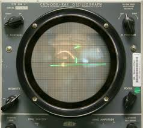
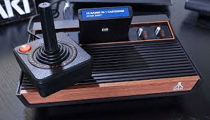
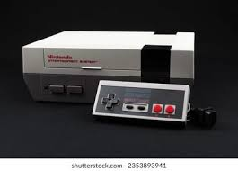
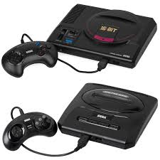
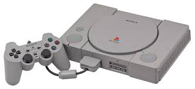
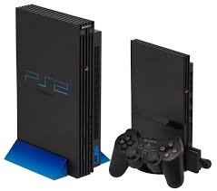
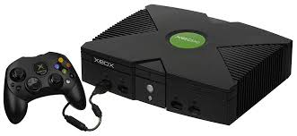
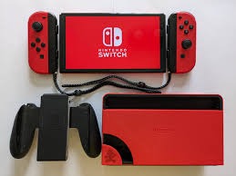

A história dos videogames começou na década de 1950, quando os primeiros experimentos com jogos eletrônicos foram realizados. Um dos primeiros jogos conhecidos foi "Tennis for Two", criado por William Higinbotham em 1958. Este jogo simples simulava uma partida de tênis em um osciloscópio. 
Na década de 1970, os videogames começaram a ganhar popularidade com o lançamento de consoles domésticos como o Magnavox Odyssey e o Atari 2600. O Atari 2600, lançado em 1977, foi um marco na indústria dos videogames, trazendo jogos como "Pong" e "Space Invaders" para as casas das pessoas. 
A década de 1980 viu o surgimento de empresas icônicas como Nintendo e Sega. A Nintendo lançou o Nintendo Entertainment System (NES) em 1985, que se tornou um enorme sucesso com jogos como "Super Mario Bros." e "The Legend of Zelda". A Sega, por sua vez, lançou o Sega Genesis em 1988, que competiu diretamente com o NES.  
Nos anos 1990, a indústria dos videogames continuou a crescer com o lançamento de consoles como o Super Nintendo Entertainment System (SNES) e o Sony PlayStation. O PlayStation, lançado em 1994, revolucionou a indústria com seus gráficos 3D e uma vasta biblioteca de jogos. 
A década de 2000 trouxe a era dos consoles modernos com o lançamento do PlayStation 2, Xbox e Nintendo GameCube. O PlayStation 2, lançado em 2000, se tornou o console mais vendido de todos os tempos. A Microsoft entrou no mercado de consoles com o Xbox, lançado em 2001, que trouxe jogos como "Halo: Combat Evolved".  
Na década de 2010, os videogames se tornaram ainda mais avançados com o lançamento do PlayStation 4, Xbox One e Nintendo Switch. Esses consoles trouxeram gráficos de alta definição, jogos online e experiências de realidade virtual. 
Hoje, os videogames são uma das formas de entretenimento mais populares do mundo, com uma indústria que gera bilhões de dólares em receita. Os jogos são jogados em consoles, computadores e dispositivos móveis, e continuam a evoluir com novas tecnologias e inovações.